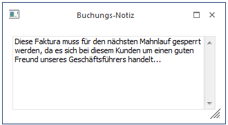

Um zusätzlichen Buchungstext eingeben zu können, drücken Sie - sobald Sie im Feld Buchungstext stehen die F8-Taste oder betätigen Sie den Notiz-Button.
Damit stehen Ihnen nicht nur die 25 Zeichen der Eingabemaske, sondern zusätzliche 2000 Zeichen zur Verfügung.

Beim Journaldruck können diese Zusatztexte durch Aktivierung der Option Notizen drucken wahlweise mit angedruckt werden.